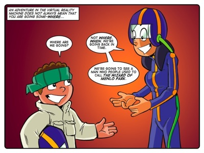

Story: Snakes Alive
Theme: Thinking with purpose
Synopsis
The class uses the Virtual Reality machine to visit Thomas Edison and watch him working in his quest to perfect the incandescent light bulb. Tom is especially excited, but the lesson is interrupted by a fire in the island’s forest. The school won’t burn but will probably be full of (fortunately harmless) snakes seeking refuge in its halls. This horrifies some of the kids but Tom is inspired by his virtual encounter with Edison to improve on the school’s imperfect snake traps.
Tom’s idol Thomas Edison demonstrates purpose-based thinking as he kept his goal (developing a commercially viable light bulb) in mind throughout the process of improving on existing designs. And this purpose directed his actions and inquiries at every step that led to success. He used information to answer questions and find the optimal materials to suit his needs. His quest for a better light bulb was neither a hobby nor an altruistic quest to banish the night nor an example of theoretical ‘Blue-sky’ research (innovation of no immediate commercial value). Edison wanted to sell his design, mainly to fund further projects.
Tom’s purpose is different: he isn’t concerned by snakes or selling a patent, he wants to “invent a perfect snake trap.” His purpose is the enjoyment and satisfaction of thinking, largely for its own sake. He doesn’t necessarily share Farrah’s concerns for the lives of chickens and mice but knows that “everyone who feels like Farrah” will buy his more humane trap. Commercial success is still not Tom’s goal, it might be a potential spin-off benefit but his purpose is still invention for its own sake – the boy wants to emulate his hero, which is largely what the Kusasa stories are about. They provide models for positive human action that your learners can follow.
Activity
No activity. All available lesson time reserved for eToys.
eToys free-form project.
Learners are free to create any eToys project.